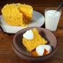

Como preparar um autentico Cuscuz Nordestino
Conhecido por todas as regiões do país,
o tradicional cuscuz de milho é feito a partir da sêmola (ou semolina) de
milho hidratada
e um toque especial de manteiga no fim preparo.
Ingredientes :
- 1/2 pacotinho de milharina
- 1 pitada de sal
- 50 g de coco ralado
- 1/2 xícara de água
- 1/2 xícara de leite de coco
Preparo:
- Misture todos os ingredientes secos em um recipiente.
-
Acrescente a água e o leite de coco aos poucos, até formar uma farofa
bem úmida.
- Deixe descansar por 5 minutos.
- Coloque na cuscuzeira sem amassar.
- Cozinhe por 15 minutos.
- Sirva quente com queijo coalho ou queijo mussarela em fatias.